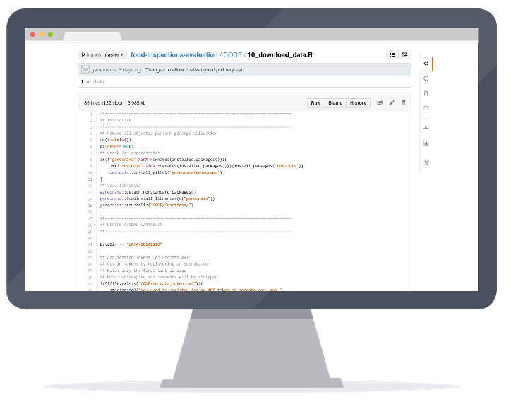

There are over 15,000 food establishments across the City of Chicago that are subject to sanitation inspections by the Department of Public Health. Three dozen inspectors are responsible for checking these establishments, which means one inspector is responsible for nearly 470 food establishments. The Department of Public Health has systematically collected the results of nearly 100,000 sanitation inspections; meanwhile, other city departments have collected data on 311 complaints, business characteristics, and other information. With this information, the city's advanced analytics team and Department of Public Health teamed up to forecast food establishments that are most likely to have critical violations so that they may be inspected first. The result is that food establishments with critical violations are more likely to be discovered earlier by the Department of Public Health's inspectors.
7 days
Improvements in number of days to discover restaurants with critical violations.
Food establishments with critical violations were discovered over one week earlier during a two-month evaluation.
Forecasting Critical Violations
A key finding of any food inspection is whether a food establishment commits a critical violation. These violations, which normally pertain to improper temperature control for food, are most susceptible to accommodating the start or spread of food borne illnesses. Just one critical violation will result in a failure, and must be remedied by the establishment to the satisfaction of the Department of Public Health.
Predictors of food inspection outcomes
- Establishments that had previous critical or serious violations
- Three-day average high temperature
- Nearby garbage and sanitation complaints
- The type of facility being inspected
- Nearby burglaries
- Whether the establishment has a tobacco license or has an incidental alcohol consumption license
- Length of time since last inspection
- The length of time the establishment has been operating
- Inspector assigned
Locating restaurants with critical issues is an important priority for the Department of Public Health. Approximately fifteen percent of inspections result in at least one critical violation. Given the large number of inspections that inspectors have to complete, the time and effort it takes to discover critical violations can mean prolonged exposure to potential disease, illness, and unsanitary conditions at some food establishments.
The Department of Public Health and Department of Innovation and Technology have partnered to explore a combination of datasets to prioritize which establishments are more likely to yield a critical violation during an inspection. Staff from Allstate Insurance have also assisted with the research project.
After conducting interviews with the Department of Public Health's food inspection team, several data sources--ranging from 311 data to food inspections and weather--were explored. A dozen variables had substantial relationships with the likelihood of an establishment failing a food inspection.
Information about the food establishment, such as its CDPH-assigned risk level and whether the establishment had failed previous inspections, served as important predictors. Information about the establishment's community, such as its location and nearby sanitation complaints made through 311, was also related to the most severe violations.
When factoring all of these items together, the research team was able to provide a likelihood of critical violations for each establishment, which was developed to prioritize which ones should be inspected first.
Open Data & Analytics
Collaboration was a key component of this project, with researchers at the Department of Innovation and Technology, Department of Public Health, Allstate Insurance Company, and Civic Consulting Alliance all working together. Each variable used in the model, with the exception of widely available weather and inspector data, was available on Chicago's open data portal. The portal provides access to hundreds of datasets, which have been used to improve transparency, allow application development, and catalyze commercial activity for start-ups and large enterprises.
The portal was an effective tool to allow for such collaborative research. This project was able to leverage Chicago's key data assets: its large volume of data, the transparency and size of its open data portal, and its ability and willingness to conduct research to improve city services, introduce savings, and increase engagement with Chicago-area businesses.
Restaurants Failing to Pass Inspections: 2015-2016
Evaluating the effectiveness of the model
The analytical model was tested using a double-blind retrodiction. The Department of Public Health conducted inspections via its normal operational procedure during September and October of 2014. During these two months, food establishments were visited in their normal order.
During this time, the Department of Public Health visited 1,637 food establishments. Almost 16 percent of them—258 establishments—yielded at least one critical violation during the experiment. Over half, 55 percent or 141 establishments, were found during the first month of the evaluation, whereas 117 establishments (45 percent) were found during the second half.
After all of the inspections were completed, the Department of Innovation and Technology used data to estimate the likelihood of each establishments having a critical violation. Researchers applied a probability to each establishment using historical data, and then investigated if these probabilities could be used to make the inspection process more efficient.
Optimizing inspections for faster delivery

The simulation would show if riskier establishments would be inspected first.
Researchers found that food inspectors could be allocated more efficiently using the computer algorithm. During the simulation, 69 percent of inspections—178 establishments—with critical violations were found during the first half of work, compared to 55 percent during normal operations. Over the two month pilot, establishments with violations were found, on average, 7 and a half days earlier. That is, an additional 37 establishments would have been cited for violations in the first month, as opposed to being discovered later, potentially after patrons became ill.
Open Science
Food inspection forecasting is also made available as an open source project. An open source approach helps build a foundation for other models attempting to forecast violations at food establishments. The analytic code is written in R, an open source, widely-known programming language for statisticians. There is no need for expensive software licenses to view and run this code.
Open sourcing the code also allows for collective advancement. The open source code contains the necessary data to let others test and try to improve upon the current analytic method. The project is also documented in a reproducible format, allowing researchers to read a description of the research and view its underlying calculations. The repository contains everything that is needed to let a community of researchers refine and derive better models.
Food Inspection Model on GitHub
